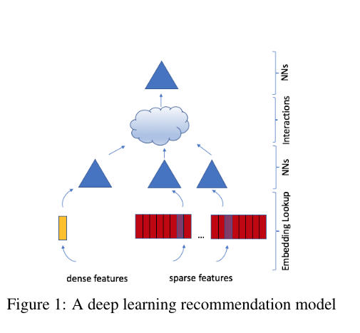
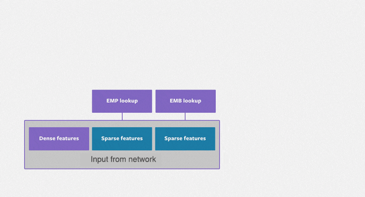
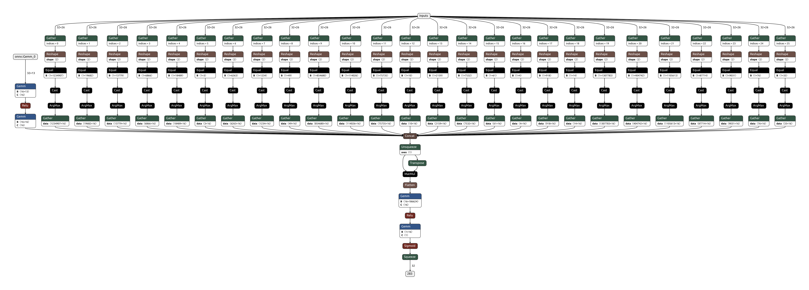
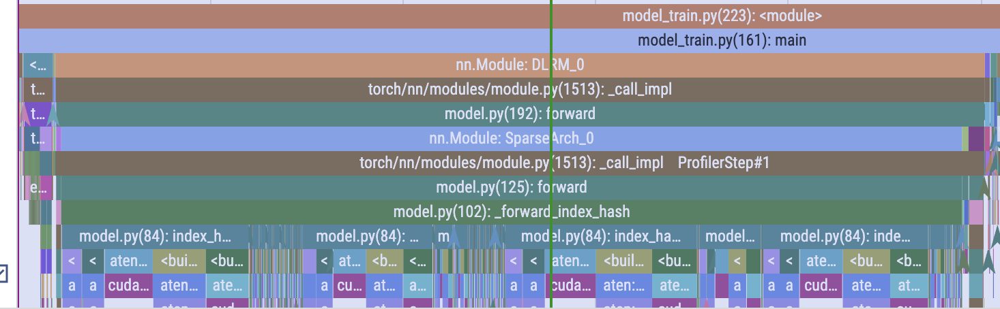

Fused Kernels
Abstract
With focus on performance to get the most out of hardware, fusing of kernels has been a popular technique. At times, researchers/practitioners will re-write their code in native cuda or cpu kernels to get optimal performance, but projects such as torch.compile aim to make this simpler. Talk will focus on generating fused kernels and how to leverage torch.compile to be able to do that. We will shift a bit from all LLM talk and look into recommendation algorithms. In the process, we will work on creating fused kernels (triton and cuda) with the help of torch.compile.
About Me
Software Engineer @ Meta building Rec Sys components for modelling lifecycle such as preprocessing, training, eval, inference, etc using Pytorch.
If you want to get in touch with me:
- Discord (@sk4301)
- Linkedin (https://www.linkedin.com/in/sharma-k/)
- Twitter (@kapil_sh_)
- Github (https://github.com/kapilsh)
How is the talk structured
- Dive into DLRM (open source deep rec sys model)
- Build it from scrarch
- Go through some some profiler traces
- torch.compile
- Writing fused kernels
- Case Study: LoRA
Setup
Code and other artifacts
- Lecture code: https://github.com/kapilsh/cuda-mode-lecture
- How to open chrome trace: chrome://tracing
- DLRM Blog Post: https://ai.meta.com/blog/dlrm-an-advanced-open-source-deep-learning-recommendation-model/
- DLRM Paper: https://arxiv.org/pdf/1906.00091
- DLRM github repo: https://github.com/facebookresearch/dlrm
- Criteo Dataset: https://ailab.criteo.com/download-criteo-1tb-click-logs-dataset/
- Pytorch Profiler with Tensorboard
- TORCH_LOGS with torch.compile
- LoRA Paper: https://arxiv.org/abs/2106.09685
- LoRA from scratch: https://lightning.ai/lightning-ai/studios/code-lora-from-scratch
- Netron: https://netron.app/
- GPUs go brrr https://horace.io/brrr_intro.html
DLRM (Deep Learning Recommendation Model)
MODEL ARCHITECTURE
- Takes a bunch of dense and sparse features
- Dense features feed to a dense MLP layer
- Sparse features feed into embedding layers
- Interaction layers between dense NN layers and spares embeddings combine dense and sparse outputs
- Interaction "features" output prediction click/no-click as output from an MLP

System Constrants

- D Dense Features MLP output
- S Sparse Features
- E Embedding Dimension on average
Interaction: O((D * S * E) ^ 2)
Criteo Dataset
- Training dataset with 24 days of ad display and click data (positive: clicked and negatives: non-clicked)
- 13 features taking integer values (mostly count features)
- 26 anonymized categorical features
- Corresponding Kaggle competition: https://www.kaggle.com/c/criteo-display-ad-challenge
Exploring DLRM
import json
import time
from dataclasses import dataclass
from typing import Mapping, List, Dict, Union
import click
import torch
import torch._dynamo
from loguru import logger
from torch import nn, Tensor
from torch.utils.data import DataLoader
from criteo_dataset import CriteoParquetDataset
from model import DenseArch, read_metadata, SparseArch, DenseSparseInteractionLayer, PredictionLayer, Parameters, DLRMfile_path = "./data/sample_criteo_data.parquet"
metadata_path = "./data/sample_criteo_metadata.json"logger.info("Reading the parquet file {}...".format(file_path))
logger.info("Reading the metadata file {}...".format(metadata_path))
dataset = CriteoParquetDataset(file_path)
data_loader = DataLoader(dataset, batch_size=2, shuffle=False)
labels, dense, sparse = next(iter(data_loader))
logger.info("Labels size: {}".format(labels.size()))
logger.info("Dense size: {}".format(dense.size()))
logger.info("Sparse size: {}".format(sparse.size()))2024-05-12 06:47:32.120 | INFO | __main__:<module>:1 - Reading the parquet file ./data/sample_criteo_data.parquet... 2024-05-12 06:47:32.121 | INFO | __main__:<module>:2 - Reading the metadata file ./data/sample_criteo_metadata.json... 2024-05-12 06:47:33.233 | INFO | __main__:<module>:7 - Labels size: torch.Size([2]) 2024-05-12 06:47:33.234 | INFO | __main__:<module>:8 - Dense size: torch.Size([2, 13]) 2024-05-12 06:47:33.234 | INFO | __main__:<module>:9 - Sparse size: torch.Size([2, 26])
densetensor([[5.0000e+00, 1.1000e+02, 0.0000e+00, 1.6000e+01, 0.0000e+00, 1.0000e+00,
0.0000e+00, 1.4000e+01, 7.0000e+00, 1.0000e+00, 0.0000e+00, 3.0600e+02,
0.0000e+00],
[3.2000e+01, 3.0000e+00, 5.0000e+00, 0.0000e+00, 1.0000e+00, 0.0000e+00,
0.0000e+00, 6.1000e+01, 5.0000e+00, 0.0000e+00, 1.0000e+00, 3.1570e+03,
5.0000e+00]])sparsetensor([[1651969401, 3793706328, 2951365679, 2489089999, 951068488, 1875733963,
897624609, 679512323, 1189011366, 771915201, 209470001, 2509774111,
12976055, 3192841527, 2316006604, 1289502458, 3523761834, 3088518074,
2501034507, 3280875304, 351689309, 632402057, 3619814411, 2091868316,
809724924, 3977271069],
[3857972621, 2695561126, 1873417685, 3666490401, 1020698403, 1875733963,
2870406529, 1128426537, 502653268, 2112471209, 1716706404, 2582335015,
12976055, 3192841527, 4089183897, 1289502458, 3523761834, 2716538129,
2501034507, 4273985635, 2737978529, 3370249814, 391309800, 1966410890,
2568167914, 3075991895]])dense_mlp_out_size = 16
num_dense_features = dense.size()[1]
dense_arch = DenseArch(dense_feature_count=num_dense_features,
dense_hidden_layers_sizes=[32],
output_size=dense_mlp_out_size)
dense_out = dense_arch(dense)
logger.info("Dense out size: {}".format(dense_out.size()))
dense_out2024-05-12 06:47:33.257 | INFO | __main__:<module>:7 - Dense out size: torch.Size([2, 16])
tensor([[ -19.3222, 16.1915, -14.7218, -48.3280, -7.9050, 49.6840,
-32.6965, 20.7256, -46.5937, -18.3307, -17.1108, 25.4100,
-16.2373, -18.1572, -2.6305, 19.7319],
[-205.2248, 222.4405, -45.1590, -361.0247, -57.2848, 468.3490,
-252.3489, 6.0886, -417.9690, -245.4523, -240.5372, 289.3233,
-145.1369, -100.0480, -92.8139, 117.6506]],
grad_fn=<AddmmBackward0>)metadata = read_metadata(metadata_path)
embedding_size = 16
embedding_sizes = {fn: embedding_size for fn in metadata.keys()}
sparse_mlp_out_size = 16
sparse_arch = SparseArch(metadata=metadata,
embedding_sizes=embedding_sizes)
# compiled model hangs on running with inputs
# sparse_arch_optim = torch.compile(sparse_arch)
sparse_out = sparse_arch(sparse)
for v in sparse_out:
logger.info("Sparse out size: {}".format(v.size()))
sparse_out[0]2024-05-12 06:47:35.113 | INFO | __main__:<module>:11 - Sparse out size: torch.Size([2, 16]) 2024-05-12 06:47:35.113 | INFO | __main__:<module>:11 - Sparse out size: torch.Size([2, 16]) 2024-05-12 06:47:35.114 | INFO | __main__:<module>:11 - Sparse out size: torch.Size([2, 16]) 2024-05-12 06:47:35.114 | INFO | __main__:<module>:11 - Sparse out size: torch.Size([2, 16]) 2024-05-12 06:47:35.114 | INFO | __main__:<module>:11 - Sparse out size: torch.Size([2, 16]) 2024-05-12 06:47:35.114 | INFO | __main__:<module>:11 - Sparse out size: torch.Size([2, 16]) 2024-05-12 06:47:35.115 | INFO | __main__:<module>:11 - Sparse out size: torch.Size([2, 16]) 2024-05-12 06:47:35.115 | INFO | __main__:<module>:11 - Sparse out size: torch.Size([2, 16]) 2024-05-12 06:47:35.115 | INFO | __main__:<module>:11 - Sparse out size: torch.Size([2, 16]) 2024-05-12 06:47:35.116 | INFO | __main__:<module>:11 - Sparse out size: torch.Size([2, 16]) 2024-05-12 06:47:35.116 | INFO | __main__:<module>:11 - Sparse out size: torch.Size([2, 16]) 2024-05-12 06:47:35.116 | INFO | __main__:<module>:11 - Sparse out size: torch.Size([2, 16]) 2024-05-12 06:47:35.116 | INFO | __main__:<module>:11 - Sparse out size: torch.Size([2, 16]) 2024-05-12 06:47:35.117 | INFO | __main__:<module>:11 - Sparse out size: torch.Size([2, 16]) 2024-05-12 06:47:35.117 | INFO | __main__:<module>:11 - Sparse out size: torch.Size([2, 16]) 2024-05-12 06:47:35.117 | INFO | __main__:<module>:11 - Sparse out size: torch.Size([2, 16]) 2024-05-12 06:47:35.118 | INFO | __main__:<module>:11 - Sparse out size: torch.Size([2, 16]) 2024-05-12 06:47:35.118 | INFO | __main__:<module>:11 - Sparse out size: torch.Size([2, 16]) 2024-05-12 06:47:35.118 | INFO | __main__:<module>:11 - Sparse out size: torch.Size([2, 16]) 2024-05-12 06:47:35.119 | INFO | __main__:<module>:11 - Sparse out size: torch.Size([2, 16]) 2024-05-12 06:47:35.120 | INFO | __main__:<module>:11 - Sparse out size: torch.Size([2, 16]) 2024-05-12 06:47:35.120 | INFO | __main__:<module>:11 - Sparse out size: torch.Size([2, 16]) 2024-05-12 06:47:35.120 | INFO | __main__:<module>:11 - Sparse out size: torch.Size([2, 16]) 2024-05-12 06:47:35.121 | INFO | __main__:<module>:11 - Sparse out size: torch.Size([2, 16]) 2024-05-12 06:47:35.121 | INFO | __main__:<module>:11 - Sparse out size: torch.Size([2, 16]) 2024-05-12 06:47:35.121 | INFO | __main__:<module>:11 - Sparse out size: torch.Size([2, 16])
tensor([[-0.6661, 0.9471, 0.2120, -0.9125, 0.6718, -0.6560, -1.9422, 0.4658,
-0.2885, -0.0596, 1.5758, -0.3784, 0.2411, -1.4830, -0.0242, 1.3030],
[ 0.4879, 1.3181, -1.8291, 1.3051, -0.3013, 0.0863, -0.5329, 0.4685,
-0.7085, 2.1623, -1.8609, -0.9163, 0.2337, -0.6242, -1.0802, -0.6486]],
grad_fn=<EmbeddingBackward0>)dense_sparse_interaction_layer = DenseSparseInteractionLayer()
ds_out = dense_sparse_interaction_layer(dense_out, sparse_out)
logger.info("Dense sparse interaction out size: {}".format(ds_out.size()))
ds_out2024-05-12 06:47:35.127 | INFO | __main__:<module>:3 - Dense sparse interaction out size: torch.Size([2, 186624])
tensor([[ 3.7335e+02, -3.1286e+02, 2.8446e+02, ..., -2.1380e-01,
4.0430e-02, 3.9008e-01],
[ 4.2117e+04, -4.5650e+04, 9.2678e+03, ..., 1.3297e-01,
2.5754e-01, 3.5446e-02]], grad_fn=<ViewBackward0>)prediction_layer = PredictionLayer(dense_out_size=dense_mlp_out_size,
sparse_out_sizes=[sparse_mlp_out_size] * len(metadata),
hidden_sizes=[16])
pred_out = prediction_layer(ds_out)
logger.info("Prediction out size: {}".format(pred_out.size()))
logger.info("Prediction out value: {}".format(pred_out))2024-05-12 06:47:35.152 | INFO | __main__:<module>:5 - Prediction out size: torch.Size([2, 1])
2024-05-12 06:47:35.153 | INFO | __main__:<module>:6 - Prediction out value: tensor([[0.4819],
[0.0000]], grad_fn=<SigmoidBackward0>)
Model Graph
Model Graph

Profiling
Initial Setup: Simple 2 layered MLP used for each triangle
Baseline
python model_train.py --config ./model_hyperparameters_small.json
Initial Distribution - Naive Implementation of index_hash
...
# mapping loaded as is from the metadata - so a python list
self.mapping = [metadata[f"SPARSE_{i}"]["tokenizer_values"] for i in range(self.num_sparse_features)]
...
# in forward
tokenizers = torch.tensor(tokenizer_values).reshape(1, -1)
if input_tensor.is_cuda:
tokenizers = tokenizers.cuda()
...
 Pytorch Profiler trace (initial)
Pytorch Profiler trace (initial)
Using tensorboard for high level info
tensorboard --logdir tb_logs --bind_all
 Initial distribution of ops - summary from tensorboard
Initial distribution of ops - summary from tensorboard
Tensor.item() takes a lot of running time
- What's going on - what is _local_scalar_dense and why is item() taking so long?
- https://discuss.pytorch.org/t/tensor-item-takes-a-lot-of-running-time/16683
- https://discuss.pytorch.org/t/calling-loss-item-is-very-slow/99774
CUDA_LAUNCH_BLOCKING=1 python model_train.py
After passing CUDA_LAUNCH_BLOCKING=1
CUDA_LAUNCH_BLOCKING=1 python model_train.py --config ./model_hyperparameters_small.json

New distribution of ops after CUDA_LAUNCH_BLOCKING=1 - summary from tensorboard
model_hyperparameters_initial.1714869603606159866.pt.trace.json

Profile initial index hash implementationImprovements
# in ctor - Put metadata needed for model directly on the gpu
self.mapping = [torch.tensor(metadata[f"SPARSE_{i}"]["tokenizer_values"], device=device) for i in
range(self.num_sparse_features)]
# in forward - dont use reshape if you can avoid
tokenizers = tokenizer_values.view(1, -1)
Ref Trace: model_hyperparameters_initial.1714870277384855181.pt.trace.json

Profile after improvements
What's next
- Index hash seems pretty expensive
- Can we improve/simplify the hash function/tokenization
- Let's just calculate the modulus hash based on cardinality
- Maybe not representative of data if distribution is non uniform across categories (but that's fine for now)
Using Modulus Hash
def modulus_hash(tensor: torch.Tensor, cardinality: torch.Tensor):
return (tensor + 1) % cardinality

Pytorch Profiler trace for optimized modulus hash
torch.compile
torch.compile DLRM
TORCH_COMPILE_DEBUG_DIR=/home/ksharma/logs TORCH_LOGS=recompiles,+dynamo,inductor,guards,graph_breaks python model.py
CUDA_LAUNCH_BLOCKING=1 python model_train.py
- GPU utilization goes up
- memory footprint goes down
Memory Footprint
Pre torch.compile

Post torch.compile

Chrome Trace after torch.compile

*Pytorch Profile Trace after torch.compile
Let's look deeper into what's going on

Custom triton kernel scheduled on the cuda stream
Increase complexity
Source: https://ai.meta.com/blog/dlrm-an-advanced-open-source-deep-learning-recommendation-model/
python dlrm_s_pytorch.py --arch-sparse-feature-size=16 --arch-mlp-bot="13-512-256-64-16" --arch-mlp-top="512-256-1" --data-generation=dataset --data-set=kaggle --processed-data-file=./input/kaggle_processed.npz --loss-function=bce --round-targets=True --learning-rate=0.1 --mini-batch-size=128 --print-freq=1024 --print-time
Let's change the model architecture
- --arch-mlp-bot="13-512-256-64-16"
- --arch-mlp-top="512-256-1"
Eager view

Full Eager Model - Pytorch Profiler trace
- Sparse Arch is now not the biggest piece of the pie
- PredictionLayer is the highest
- Top MLP and sigmoid
torch.compile view

Full torch.compile Model - Pytorch Profiler trace
torch.compile -> triton code generation
How do we see what is going on with the triton kernels
Generate triton code
TORCH_LOGS=output_code CUDA_LAUNCH_BLOCKING=1 python model_train.py --config ./model_hyperparameters_main.json --use_torch_compile
Inspect
- Prints generated code for you
- Should see
... torch._inductor.graph.__output_code: [INFO] Output code written to: ... - Shows source nodes from where the code was generated
- Fused kernels:
- fused_relu
- fused_cat
- fused_embedding
- fused_sigmoid_squeeze
- Reinterpret_tensor: https://github.com/pytorch/pytorch/blob/ca98c2a932132e49559bf777c02798633d585e66/torch/csrc/inductor/inductor_ops.cpp#L54
Write our own
Kernel
@triton.jit
def pointwise_add_relu_fusion_512(in_out_ptr0, in_ptr0, XBLOCK : tl.constexpr):
# Number of elements in in_out_ptr0 (B X N)
xnumel = 65536
# This program will process inputs that are offset from the initial data.
# For instance, if you had a strided tensor of 65536 i.e. 128 X 512 and XBLOCK = 512
# the programs will each access the elements [0:512, 512:1024, ...].
# i.e. offsets is a list of pointers:
# Question: Can you see how torch.compile is allocating blocks here?
# below we will call this N = 512
xoffset = tl.program_id(0) * XBLOCK
# block threads
xindex = xoffset + tl.arange(0, XBLOCK)[:]
# masks to guard against overflow
xmask = xindex < xnumel
# xindex will have elements from 0:N, N:2N where N = dense @ weights
x2 = xindex
# bias i.e. 1D tensor with only N elements
# mod will give the us the right
x0 = xindex % 512
# load the N elements
tmp0 = tl.load(in_out_ptr0 + (x2), xmask)
# load the 1D tensor
tmp1 = tl.load(in_ptr0 + (x0), xmask, eviction_policy='evict_last')
# result = bias + dense @ weights
tmp2 = tmp0 + tmp1
# relu: can also use tl.maximum
tmp3 = triton_helpers.maximum(0, tmp2)
# output moved over
tl.store(in_out_ptr0 + (x2), tmp3, None)
Test
import triton
import torch
import triton.language as tl
from torch._inductor import triton_helpers
from torch._inductor.triton_heuristics import grid
@triton.jit
def pointwise_add_relu_fusion_512(in_out_ptr0, in_ptr0, XBLOCK : tl.constexpr):
xnumel = 65536
xoffset = tl.program_id(0) * XBLOCK
xindex = xoffset + tl.arange(0, XBLOCK)[:]
xmask = xindex < xnumel
# dense @ weights
x2 = xindex
# bias
x0 = xindex % 512
tmp0 = tl.load(in_out_ptr0 + (x2), xmask)
tmp1 = tl.load(in_ptr0 + (x0), xmask, eviction_policy='evict_last')
# bias + dense @ weights
tmp2 = tmp0 + tmp1
tmp3 = triton_helpers.maximum(0, tmp2)
tl.store(in_out_ptr0 + (x2), tmp3, None)
torch.cuda.set_device(0) # no-op to ensure context
X = torch.ones(size=(128, 512), device='cuda')
print(X[:3, :3])
Y = torch.ones(size=(512,), device='cuda')
print(Y[:3])
eager_result = torch.maximum(X + Y, torch.tensor(0., device='cuda'))
print(eager_result[:3, :3])
pointwise_add_relu_fusion_512[grid(65536)](X, Y, 512)
print(X)
torch.testing.assert_close(X, eager_result, rtol=1e-4, atol=1e-4)tensor([[1., 1., 1.],
[1., 1., 1.],
[1., 1., 1.]], device='cuda:0')
tensor([1., 1., 1.], device='cuda:0')
tensor([[2., 2., 2.],
[2., 2., 2.],
[2., 2., 2.]], device='cuda:0')
tensor([[2., 2., 2., ..., 2., 2., 2.],
[2., 2., 2., ..., 2., 2., 2.],
[2., 2., 2., ..., 2., 2., 2.],
...,
[2., 2., 2., ..., 2., 2., 2.],
[2., 2., 2., ..., 2., 2., 2.],
[2., 2., 2., ..., 2., 2., 2.]], device='cuda:0')
Cuda Kernel
Ask ChatGPT to generate the kernel for us
ChatGPT output (without any changes)
#include <cuda_fp16.h>
__global__ void pointwise_add_relu_fusion_512(float* in_out_ptr0, const float* in_ptr0, const int XBLOCK) {
const int xnumel = 65536;
const int N = 512; // Value of N from the Triton kernel
const int tid = threadIdx.x;
const int xoffset = blockIdx.x * XBLOCK;
const int xindex = xoffset + tid;
const bool xmask = xindex < xnumel;
if (xmask) {
int x2 = xindex;
int x0 = xindex % N;
float tmp0 = in_out_ptr0[x2];
float tmp1 = in_ptr0[x0];
float tmp2 = tmp0 + tmp1;
float tmp3 = max(0.0f, tmp2); // ReLU operation
in_out_ptr0[x2] = tmp3;
}
}
Let's run the generated CUDA kernel
NOTE: To run torch native, you can download it as below or add conda environment to $CMAKE_PREFIX_PATH
wget https://download.pytorch.org/libtorch/cu121/libtorch-cxx11-abi-shared-with-deps-2.2.1%2Bcu121.zip # Download torch native lib
Build the cmake project
! mkdir -p kernels/cmake-build-debug && cd kernels/cmake-build-debug && cmake .. -G Ninja && ninja-- CMake version: 3.22.1 -- Caffe2: CUDA detected: 12.1 -- Caffe2: CUDA nvcc is: /home/ksharma/anaconda3/envs/cuda-learn/bin/nvcc -- Caffe2: CUDA toolkit directory: /home/ksharma/anaconda3/envs/cuda-learn -- Caffe2: Header version is: 12.1 -- /home/ksharma/anaconda3/envs/cuda-learn/lib/libnvrtc.so shorthash is c993a6f1 -- USE_CUDNN is set to 0. Compiling without cuDNN support -- USE_CUSPARSELT is set to 0. Compiling without cuSPARSELt support -- Autodetected CUDA architecture(s): 7.5 -- Added CUDA NVCC flags for: -gencode;arch=compute_75,code=sm_75 -- Configuring done -- Generating done -- Build files have been written to: /home/ksharma/dev/git/cuda-mode-lecture/kernels/cmake-build-debug ninja: no work to do.
!./kernels/cmake-build-debug/dlrm_kernels_testTensor x:
-0.9247 -0.4253 -2.6438 0.1452 -0.1209 -0.5797 -0.6229 -0.3284 -1.0745 -0.3631
-1.6711 2.2655 0.3117 -0.1842 1.2866 1.1820 -0.1271 1.2169 1.4353 1.0605
-0.4941 -1.4244 -0.7244 -1.2973 0.0697 -0.0074 1.8969 0.6878 -0.0779 -0.8373
1.3506 -0.2879 -0.5965 -0.3283 -0.9086 -0.8059 -0.7407 -0.0504 0.5435 1.5150
0.0141 0.4532 1.6349 0.7124 -0.1806 1.0252 -1.4622 -0.7554 -0.1836 0.3824
0.3918 -0.0830 0.8971 -1.1123 0.1116 0.4863 -0.5499 -0.3231 -0.5469 0.9049
0.2837 0.1210 0.4730 -1.0823 -0.0334 -0.9734 0.9559 -1.1795 -1.0064 0.1160
0.6852 -0.4124 -0.6738 -0.5404 0.6898 -1.5517 0.3805 -0.0436 0.3597 -0.5043
[ CUDAFloatType{8,10} ]
Tensor y:
0.1808
-0.5523
0.9238
-0.7350
1.3800
0.8676
0.1297
-0.9406
0.8109
0.8821
[ CUDAFloatType{10} ]
Expected:
0.0000 0.0000 0.0000 0.0000 1.2591 0.2879 0.0000 0.0000 0.0000 0.5189
0.0000 1.7132 1.2355 0.0000 2.6666 2.0496 0.0026 0.2763 2.2462 1.9425
0.0000 0.0000 0.1994 0.0000 1.4497 0.8602 2.0266 0.0000 0.7330 0.0448
1.5315 0.0000 0.3273 0.0000 0.4714 0.0617 0.0000 0.0000 1.3544 2.3971
0.1949 0.0000 2.5587 0.0000 1.1994 1.8929 0.0000 0.0000 0.6273 1.2644
0.5726 0.0000 1.8209 0.0000 1.4916 1.3539 0.0000 0.0000 0.2640 1.7869
0.4645 0.0000 1.3968 0.0000 1.3465 0.0000 1.0856 0.0000 0.0000 0.9980
0.8660 0.0000 0.2500 0.0000 2.0698 0.0000 0.5102 0.0000 1.1706 0.3778
[ CUDAFloatType{8,10} ]
Result:
0.0000 0.0000 0.0000 0.0000 1.2591 0.2879 0.0000 0.0000 0.0000 0.5189
0.0000 1.7132 1.2355 0.0000 2.6666 2.0496 0.0026 0.2763 2.2462 1.9425
0.0000 0.0000 0.1994 0.0000 1.4497 0.8602 2.0266 0.0000 0.7330 0.0448
1.5315 0.0000 0.3273 0.0000 0.4714 0.0617 0.0000 0.0000 1.3544 2.3971
0.1949 0.0000 2.5587 0.0000 1.1994 1.8929 0.0000 0.0000 0.6273 1.2644
0.5726 0.0000 1.8209 0.0000 1.4916 1.3539 0.0000 0.0000 0.2640 1.7869
0.4645 0.0000 1.3968 0.0000 1.3465 0.0000 1.0856 0.0000 0.0000 0.9980
0.8660 0.0000 0.2500 0.0000 2.0698 0.0000 0.5102 0.0000 1.1706 0.3778
[ CUDAFloatType{8,10} ]
All Match: true
(OR) Run it locally with pytorch utils
cuda_code_file = "./kernels/src/pointwise_add_relu_fused.cu"
header_code_file = "./kernels/src/pointwise_add_relu_fused.cuh"
with open(cuda_code_file) as f:
cuda_code = "".join([f for f in f.readlines() if not f.startswith("#include")])
print(cuda_code)
print("----")
with open(header_code_file) as f:
header_code = "".join([f for f in f.readlines() if not f.startswith("#include")])
print(header_code)
__global__ void add_relu_fusion_kernel(float* in_out_ptr0, const float* in_ptr0, const int xnumel ,const int XBLOCK) {
const int tid = threadIdx.x;
const int xoffset = blockIdx.x * XBLOCK;
const int xindex = xoffset + tid;
const bool xmask = xindex < xnumel;
if (xmask) {
int x2 = xindex;
int x0 = xindex % XBLOCK;
float tmp0 = in_out_ptr0[x2];
float tmp1 = in_ptr0[x0];
float tmp2 = tmp0 + tmp1;
float tmp3 = max(0.0f, tmp2); // ReLU operation
in_out_ptr0[x2] = tmp3;
}
}
torch::Tensor add_relu_fusion(torch::Tensor in_out, const torch::Tensor& in) {
auto sizes = in_out.sizes();
auto XBLOCK = sizes[1];
auto numel = in_out.numel();
dim3 threadsPerBlock(XBLOCK);
dim3 numBlocks((numel + XBLOCK - 1) / XBLOCK);
add_relu_fusion_kernel<<<numBlocks, threadsPerBlock>>>(in_out.data_ptr<float>(), in.data_ptr<float>(), numel, XBLOCK);
cudaDeviceSynchronize();
return std::move(in_out);
}
----
torch::Tensor add_relu_fusion(torch::Tensor in_out, const torch::Tensor& in);
!mkdir ./buildmkdir: cannot create directory ‘./build’: File exists
import torch
from torch.utils.cpp_extension import load_inline
cuda_extension = load_inline(
name='kernel_extension',
cpp_sources=header_code,
cuda_sources=cuda_code,
functions=["add_relu_fusion"],
with_cuda=True,
verbose=True,
extra_cuda_cflags=["-O2"],
build_directory='./build',
)Detected CUDA files, patching ldflags Emitting ninja build file ./build/build.ninja... Building extension module kernel_extension... Allowing ninja to set a default number of workers... (overridable by setting the environment variable MAX_JOBS=N)
[1/3] c++ -MMD -MF main.o.d -DTORCH_EXTENSION_NAME=kernel_extension -DTORCH_API_INCLUDE_EXTENSION_H -DPYBIND11_COMPILER_TYPE=\"_gcc\" -DPYBIND11_STDLIB=\"_libstdcpp\" -DPYBIND11_BUILD_ABI=\"_cxxabi1011\" -isystem /home/ksharma/anaconda3/envs/cuda-learn/lib/python3.11/site-packages/torch/include -isystem /home/ksharma/anaconda3/envs/cuda-learn/lib/python3.11/site-packages/torch/include/torch/csrc/api/include -isystem /home/ksharma/anaconda3/envs/cuda-learn/lib/python3.11/site-packages/torch/include/TH -isystem /home/ksharma/anaconda3/envs/cuda-learn/lib/python3.11/site-packages/torch/include/THC -isystem /home/ksharma/anaconda3/envs/cuda-learn/include -isystem /home/ksharma/anaconda3/envs/cuda-learn/include/python3.11 -D_GLIBCXX_USE_CXX11_ABI=0 -fPIC -std=c++17 -c /home/ksharma/dev/git/cuda-mode-lecture/build/main.cpp -o main.o [2/3] /home/ksharma/anaconda3/envs/cuda-learn/bin/nvcc --generate-dependencies-with-compile --dependency-output cuda.cuda.o.d -DTORCH_EXTENSION_NAME=kernel_extension -DTORCH_API_INCLUDE_EXTENSION_H -DPYBIND11_COMPILER_TYPE=\"_gcc\" -DPYBIND11_STDLIB=\"_libstdcpp\" -DPYBIND11_BUILD_ABI=\"_cxxabi1011\" -isystem /home/ksharma/anaconda3/envs/cuda-learn/lib/python3.11/site-packages/torch/include -isystem /home/ksharma/anaconda3/envs/cuda-learn/lib/python3.11/site-packages/torch/include/torch/csrc/api/include -isystem /home/ksharma/anaconda3/envs/cuda-learn/lib/python3.11/site-packages/torch/include/TH -isystem /home/ksharma/anaconda3/envs/cuda-learn/lib/python3.11/site-packages/torch/include/THC -isystem /home/ksharma/anaconda3/envs/cuda-learn/include -isystem /home/ksharma/anaconda3/envs/cuda-learn/include/python3.11 -D_GLIBCXX_USE_CXX11_ABI=0 -D__CUDA_NO_HALF_OPERATORS__ -D__CUDA_NO_HALF_CONVERSIONS__ -D__CUDA_NO_BFLOAT16_CONVERSIONS__ -D__CUDA_NO_HALF2_OPERATORS__ --expt-relaxed-constexpr -gencode=arch=compute_75,code=compute_75 -gencode=arch=compute_75,code=sm_75 --compiler-options '-fPIC' -O2 -std=c++17 -c /home/ksharma/dev/git/cuda-mode-lecture/build/cuda.cu -o cuda.cuda.o [3/3] c++ main.o cuda.cuda.o -shared -L/home/ksharma/anaconda3/envs/cuda-learn/lib/python3.11/site-packages/torch/lib -lc10 -lc10_cuda -ltorch_cpu -ltorch_cuda -ltorch -ltorch_python -L/home/ksharma/anaconda3/envs/cuda-learn/lib -lcudart -o kernel_extension.so
Loading extension module kernel_extension...
dir(cuda_extension)['__doc__', '__file__', '__loader__', '__name__', '__package__', '__spec__', 'add_relu_fusion']
torch.cuda.set_device(0) # no-op to ensure context
X = torch.ones(size=(128, 512), device='cuda')
Y = torch.ones(size=(512,), device='cuda')
cuda_extension.add_relu_fusion(X, Y)
print(X)
torch.testing.assert_close(X, eager_result, rtol=1e-4, atol=1e-4)tensor([[2., 2., 2., ..., 2., 2., 2.],
[2., 2., 2., ..., 2., 2., 2.],
[2., 2., 2., ..., 2., 2., 2.],
...,
[2., 2., 2., ..., 2., 2., 2.],
[2., 2., 2., ..., 2., 2., 2.],
[2., 2., 2., ..., 2., 2., 2.]], device='cuda:0')
torch.compile is your triton learning companion
Example: LoRA Fused Kernels
LoRA (LOW-RANK ADAPTATION)

Source: https://arxiv.org/pdf/2106.09685
- Simple low rank reparametization of weight matrices
- Singular value decomposition
Fused Kernels
TORCH_LOGS=output_code CUDA_LAUNCH_BLOCKING=1 python lora_on_simple_mlp.py
from lora_on_simple_mlp import *
from kernels.triton_fused_add_mul_relu import * [TRITON] Fused Mul Add Relu
print(triton.__version__)
in_out_tensor, in_tensor, bias = get_inputs(add_manual_seed=True)
expected_output = torch.maximum(in_out_tensor + 0.5 * in_tensor + bias, torch.tensor(0., device='cuda'))
print("Input", in_out_tensor)
print("Expected Output", expected_output)2.2.0
Input tensor([[-0.9247, -0.4253, -2.6438, 0.1452, -0.1209, -0.5797, -0.6229, -0.3284],
[-1.0745, -0.3631, -1.6711, 2.2655, 0.3117, -0.1842, 1.2866, 1.1820],
[-0.1271, 1.2169, 1.4353, 1.0605, -0.4941, -1.4244, -0.7244, -1.2973],
[ 0.0697, -0.0074, 1.8969, 0.6878, -0.0779, -0.8373, 1.3506, -0.2879],
[-0.5965, -0.3283, -0.9086, -0.8059, -0.7407, -0.0504, 0.5435, 1.5150],
[ 0.0141, 0.4532, 1.6349, 0.7124, -0.1806, 1.0252, -1.4622, -0.7554],
[-0.1836, 0.3824, 0.3918, -0.0830, 0.8971, -1.1123, 0.1116, 0.4863],
[-0.5499, -0.3231, -0.5469, 0.9049, 0.2837, 0.1210, 0.4730, -1.0823]],
device='cuda:0')
Expected Output tensor([[1.7098e+00, 0.0000e+00, 0.0000e+00, 0.0000e+00, 6.7049e-01, 0.0000e+00,
3.4424e-01, 1.1223e-02],
[1.8750e+00, 0.0000e+00, 0.0000e+00, 2.2105e+00, 6.6808e-01, 0.0000e+00,
1.8445e+00, 1.9246e+00],
[2.2614e+00, 1.3964e+00, 5.1802e-01, 2.0114e+00, 0.0000e+00, 0.0000e+00,
2.7715e-01, 0.0000e+00],
[2.4750e+00, 0.0000e+00, 1.9079e+00, 5.4869e-01, 3.7923e-01, 0.0000e+00,
3.1791e+00, 6.6843e-01],
[1.8234e+00, 0.0000e+00, 1.1147e-01, 0.0000e+00, 0.0000e+00, 0.0000e+00,
2.4250e+00, 3.2593e+00],
[2.2903e+00, 0.0000e+00, 1.1721e+00, 6.9331e-01, 1.0583e+00, 6.7518e-01,
0.0000e+00, 2.6185e-01],
[1.5804e+00, 0.0000e+00, 9.0740e-01, 1.6670e-01, 5.5230e-02, 0.0000e+00,
1.5325e+00, 3.5984e-01],
[1.5554e+00, 0.0000e+00, 0.0000e+00, 9.4380e-01, 2.9795e-03, 7.4125e-02,
1.6286e+00, 0.0000e+00]], device='cuda:0')
BLOCK_SIZE = 8
grid = lambda meta: (triton.cdiv(in_out_tensor.numel(), meta['BLOCK_SIZE']),)
fused_add_mul_relu[grid](in_out_tensor,
bias,
in_tensor,
in_out_tensor.numel(),
BLOCK_SIZE=BLOCK_SIZE)
print("Output 1", in_out_tensor)
torch.testing.assert_close(in_out_tensor, expected_output, rtol=1e-4, atol=1e-4)Output 1 tensor([[1.7098e+00, 0.0000e+00, 0.0000e+00, 0.0000e+00, 6.7049e-01, 0.0000e+00,
3.4424e-01, 1.1223e-02],
[1.8750e+00, 0.0000e+00, 0.0000e+00, 2.2105e+00, 6.6808e-01, 0.0000e+00,
1.8445e+00, 1.9246e+00],
[2.2614e+00, 1.3964e+00, 5.1802e-01, 2.0114e+00, 0.0000e+00, 0.0000e+00,
2.7715e-01, 0.0000e+00],
[2.4750e+00, 0.0000e+00, 1.9079e+00, 5.4869e-01, 3.7923e-01, 0.0000e+00,
3.1791e+00, 6.6843e-01],
[1.8234e+00, 0.0000e+00, 1.1147e-01, 0.0000e+00, 0.0000e+00, 0.0000e+00,
2.4250e+00, 3.2593e+00],
[2.2903e+00, 0.0000e+00, 1.1721e+00, 6.9331e-01, 1.0583e+00, 6.7518e-01,
0.0000e+00, 2.6185e-01],
[1.5804e+00, 0.0000e+00, 9.0740e-01, 1.6670e-01, 5.5230e-02, 0.0000e+00,
1.5325e+00, 3.5984e-01],
[1.5554e+00, 0.0000e+00, 0.0000e+00, 9.4380e-01, 2.9795e-03, 7.4125e-02,
1.6286e+00, 0.0000e+00]], device='cuda:0')
in_out_tensor, in_tensor, bias = get_inputs(add_manual_seed=True)
num_weights = bias.numel()
fused_add_mul_relu_cleaner[grid](in_out_tensor,
bias,
in_tensor,
num_weights,
in_out_tensor.numel(),
multiplier=0.5,
BLOCK_SIZE=BLOCK_SIZE)
print("Output 2", in_out_tensor)
torch.testing.assert_close(in_out_tensor, expected_output, rtol=1e-4, atol=1e-4)Output 2 tensor([[1.7098e+00, 0.0000e+00, 0.0000e+00, 0.0000e+00, 6.7049e-01, 0.0000e+00,
3.4424e-01, 1.1223e-02],
[1.8750e+00, 0.0000e+00, 0.0000e+00, 2.2105e+00, 6.6808e-01, 0.0000e+00,
1.8445e+00, 1.9246e+00],
[2.2614e+00, 1.3964e+00, 5.1802e-01, 2.0114e+00, 0.0000e+00, 0.0000e+00,
2.7715e-01, 0.0000e+00],
[2.4750e+00, 0.0000e+00, 1.9079e+00, 5.4869e-01, 3.7923e-01, 0.0000e+00,
3.1791e+00, 6.6843e-01],
[1.8234e+00, 0.0000e+00, 1.1147e-01, 0.0000e+00, 0.0000e+00, 0.0000e+00,
2.4250e+00, 3.2593e+00],
[2.2903e+00, 0.0000e+00, 1.1721e+00, 6.9331e-01, 1.0583e+00, 6.7518e-01,
0.0000e+00, 2.6185e-01],
[1.5804e+00, 0.0000e+00, 9.0740e-01, 1.6670e-01, 5.5230e-02, 0.0000e+00,
1.5325e+00, 3.5984e-01],
[1.5554e+00, 0.0000e+00, 0.0000e+00, 9.4380e-01, 2.9795e-03, 7.4125e-02,
1.6286e+00, 0.0000e+00]], device='cuda:0')
[CUDA] Fused Mul Add Relu
cuda_code_file = "./kernels/src/fused_kernels_lora_on_mlp.cu"
header_code_file = "./kernels/src/fused_kernels_lora_on_mlp.cuh"
with open(cuda_code_file) as f:
cuda_code = "".join([f for f in f.readlines() if not f.startswith("#include")])
print(cuda_code)
print("----")
with open(header_code_file) as f:
header_code = "".join([f for f in f.readlines() if not f.startswith("#include")])
print(header_code)
__global__ void fused_add_mul_relu_kernel(float *dense_in_out_ptr,
const float *scalar_ptr,
const float *dense_ptr,
const int num_weights,
const int xnumel,
const double multiplier) {
int index = blockIdx.x * blockDim.x + threadIdx.x;
if (index < xnumel) {
int scalar_index = index % num_weights;
float tmp0 = dense_in_out_ptr[index];
float tmp1 = scalar_ptr[scalar_index];
float tmp3 = dense_ptr[index];
float ma_result = max(0.0f, multiplier * tmp3 + tmp0 + tmp1);
dense_in_out_ptr[index] = ma_result;
}
}
torch::Tensor fused_add_mul_relu(torch::Tensor in_out,
const torch::Tensor &bias,
const torch::Tensor &in,
const double multiplier) {
auto numel = in_out.numel();
auto sizes = in_out.sizes();
const int XBLOCK = sizes[0];
dim3 threadsPerBlock(sizes[1]);
dim3 numBlocks((numel + XBLOCK - 1) / XBLOCK);
fused_add_mul_relu_kernel<<<numBlocks, threadsPerBlock>>>(
in_out.data_ptr<float>(),
bias.data_ptr<float>(),
in.data_ptr<float>(),
sizes[1],
numel,
multiplier);
cudaDeviceSynchronize();
return std::move(in_out);
}
----
torch::Tensor fused_add_mul_relu(torch::Tensor in_out,
const torch::Tensor &bias,
const torch::Tensor &in,
const double multiplier);
! ./kernels/cmake-build-debug/fused_kernels_lora_testTensor x:
-0.9247 -0.4253 -2.6438 0.1452 -0.1209 -0.5797 -0.6229 -0.3284 -1.0745 -0.3631
-1.6711 2.2655 0.3117 -0.1842 1.2866 1.1820 -0.1271 1.2169 1.4353 1.0605
-0.4941 -1.4244 -0.7244 -1.2973 0.0697 -0.0074 1.8969 0.6878 -0.0779 -0.8373
1.3506 -0.2879 -0.5965 -0.3283 -0.9086 -0.8059 -0.7407 -0.0504 0.5435 1.5150
0.0141 0.4532 1.6349 0.7124 -0.1806 1.0252 -1.4622 -0.7554 -0.1836 0.3824
0.3918 -0.0830 0.8971 -1.1123 0.1116 0.4863 -0.5499 -0.3231 -0.5469 0.9049
0.2837 0.1210 0.4730 -1.0823 -0.0334 -0.9734 0.9559 -1.1795 -1.0064 0.1160
0.6852 -0.4124 -0.6738 -0.5404 0.6898 -1.5517 0.3805 -0.0436 0.3597 -0.5043
[ CUDAFloatType{8,10} ]
Tensor bias:
0.1808
-0.5523
0.9238
-0.7350
1.3800
0.8676
0.1297
-0.9406
0.8109
0.8821
[ CUDAFloatType{10} ]
Tensor y:
2.5441 -0.7163 -0.4934 0.1267 0.1014 -0.4035 0.9023 0.8099 -0.6884 0.1372
1.0377 0.0925 -0.3752 -0.0908 2.0639 -1.8164 -0.2719 0.2811 -1.0399 0.7765
0.8814 0.0444 -1.4870 1.1334 1.3268 -1.2616 0.9501 -0.6558 0.9098 -0.6290
-0.6587 2.0811 1.4151 -0.3091 -0.2055 2.0562 -0.0490 -0.6361 -0.5359 -0.1310
-0.2945 1.2275 1.0549 0.3576 1.6378 -0.2310 0.7883 -0.0807 -0.3924 1.2673
1.0420 -0.4945 -1.1637 1.5740 0.7116 0.6104 1.2852 -0.6533 1.1171 -1.0067
1.2912 1.6028 0.1332 1.0703 -1.1161 -0.8396 -3.6680 0.8189 0.1255 -0.7691
0.1552 -0.8782 -0.4734 0.9690 -1.9985 0.1030 0.8580 0.7625 -1.2587 -0.8183
[ CUDAFloatType{8,10} ]
Expected:
5.1076 0.0000 0.0000 0.0000 1.4922 0.0000 1.5820 0.5938 0.0000 0.8346
0.8966 1.9261 0.3726 0.0000 7.4136 0.0000 0.0000 0.9228 0.0000 3.7285
1.7140 0.0000 0.0000 0.5746 4.5014 0.0000 4.2118 0.0000 2.8254 0.0000
0.0165 3.9464 3.5820 0.0000 0.0000 4.7910 0.0000 0.0000 0.1218 2.0957
0.0000 2.7243 4.9850 0.7998 4.9664 1.3615 0.4806 0.0000 0.0000 4.1793
2.9691 0.0000 0.0000 1.7729 3.1283 2.7577 2.5356 0.0000 2.8334 0.0000
3.4343 3.2553 1.7032 0.6444 0.0000 0.0000 0.0000 0.0000 0.0932 0.0000
1.2229 0.0000 0.0000 0.9534 0.0000 0.0000 2.4837 0.7694 0.0000 0.0000
[ CUDAFloatType{8,10} ]
Result:
5.1076 0.0000 0.0000 0.0000 1.4922 0.0000 1.5820 0.5938 0.0000 0.8346
0.8966 1.9261 0.3726 0.0000 7.4136 0.0000 0.0000 0.9228 0.0000 3.7285
1.7140 0.0000 0.0000 0.5746 4.5014 0.0000 4.2118 0.0000 2.8254 0.0000
0.0165 3.9464 3.5820 0.0000 0.0000 4.7910 0.0000 0.0000 0.1218 2.0957
0.0000 2.7243 4.9850 0.7998 4.9664 1.3615 0.4806 0.0000 0.0000 4.1793
2.9691 0.0000 0.0000 1.7729 3.1283 2.7577 2.5356 0.0000 2.8334 0.0000
3.4343 3.2553 1.7032 0.6444 0.0000 0.0000 0.0000 0.0000 0.0932 0.0000
1.2229 0.0000 0.0000 0.9534 0.0000 0.0000 2.4837 0.7694 0.0000 0.0000
[ CUDAFloatType{8,10} ]
All Match: true
cuda_extension = load_inline(
name='kernel_extension',
cpp_sources=header_code,
cuda_sources=cuda_code,
functions=["fused_add_mul_relu"],
with_cuda=True,
verbose=True,
extra_cuda_cflags=["-O2"],
build_directory='./build',
)The input conditions for extension module kernel_extension have changed. Bumping to version 1 and re-building as kernel_extension_v1... Detected CUDA files, patching ldflags Emitting ninja build file ./build/build.ninja... Building extension module kernel_extension_v1... Allowing ninja to set a default number of workers... (overridable by setting the environment variable MAX_JOBS=N)
[1/3] c++ -MMD -MF main.o.d -DTORCH_EXTENSION_NAME=kernel_extension_v1 -DTORCH_API_INCLUDE_EXTENSION_H -DPYBIND11_COMPILER_TYPE=\"_gcc\" -DPYBIND11_STDLIB=\"_libstdcpp\" -DPYBIND11_BUILD_ABI=\"_cxxabi1011\" -isystem /home/ksharma/anaconda3/envs/cuda-learn/lib/python3.11/site-packages/torch/include -isystem /home/ksharma/anaconda3/envs/cuda-learn/lib/python3.11/site-packages/torch/include/torch/csrc/api/include -isystem /home/ksharma/anaconda3/envs/cuda-learn/lib/python3.11/site-packages/torch/include/TH -isystem /home/ksharma/anaconda3/envs/cuda-learn/lib/python3.11/site-packages/torch/include/THC -isystem /home/ksharma/anaconda3/envs/cuda-learn/include -isystem /home/ksharma/anaconda3/envs/cuda-learn/include/python3.11 -D_GLIBCXX_USE_CXX11_ABI=0 -fPIC -std=c++17 -c /home/ksharma/dev/git/cuda-mode-lecture/build/main.cpp -o main.o [2/3] /home/ksharma/anaconda3/envs/cuda-learn/bin/nvcc --generate-dependencies-with-compile --dependency-output cuda.cuda.o.d -DTORCH_EXTENSION_NAME=kernel_extension_v1 -DTORCH_API_INCLUDE_EXTENSION_H -DPYBIND11_COMPILER_TYPE=\"_gcc\" -DPYBIND11_STDLIB=\"_libstdcpp\" -DPYBIND11_BUILD_ABI=\"_cxxabi1011\" -isystem /home/ksharma/anaconda3/envs/cuda-learn/lib/python3.11/site-packages/torch/include -isystem /home/ksharma/anaconda3/envs/cuda-learn/lib/python3.11/site-packages/torch/include/torch/csrc/api/include -isystem /home/ksharma/anaconda3/envs/cuda-learn/lib/python3.11/site-packages/torch/include/TH -isystem /home/ksharma/anaconda3/envs/cuda-learn/lib/python3.11/site-packages/torch/include/THC -isystem /home/ksharma/anaconda3/envs/cuda-learn/include -isystem /home/ksharma/anaconda3/envs/cuda-learn/include/python3.11 -D_GLIBCXX_USE_CXX11_ABI=0 -D__CUDA_NO_HALF_OPERATORS__ -D__CUDA_NO_HALF_CONVERSIONS__ -D__CUDA_NO_BFLOAT16_CONVERSIONS__ -D__CUDA_NO_HALF2_OPERATORS__ --expt-relaxed-constexpr -gencode=arch=compute_75,code=compute_75 -gencode=arch=compute_75,code=sm_75 --compiler-options '-fPIC' -O2 -std=c++17 -c /home/ksharma/dev/git/cuda-mode-lecture/build/cuda.cu -o cuda.cuda.o [3/3] c++ main.o cuda.cuda.o -shared -L/home/ksharma/anaconda3/envs/cuda-learn/lib/python3.11/site-packages/torch/lib -lc10 -lc10_cuda -ltorch_cpu -ltorch_cuda -ltorch -ltorch_python -L/home/ksharma/anaconda3/envs/cuda-learn/lib -lcudart -o kernel_extension_v1.so
Loading extension module kernel_extension_v1...
in_out_tensor, in_tensor, bias = get_inputs(add_manual_seed=True)
num_weights = bias.numel()
result = cuda_extension.fused_add_mul_relu(in_out_tensor, bias, in_tensor, 0.5)
torch.testing.assert_close(result, expected_output, rtol=1e-4, atol=1e-4)Combine the kernels
Fused add mul sigmoid/relu/etc
@triton.jit
def fused_add_mul_activation_kernel(x_ptr, bias_ptr, in_ptr,
num_weights: tl.constexpr,
xnumel: tl.constexpr,
multiplier: tl.constexpr,
activation: tl.constexpr,
BLOCK_SIZE: tl.constexpr):
xoffset = tl.program_id(0) * BLOCK_SIZE
index = xoffset + tl.arange(0, BLOCK_SIZE)[:]
mask = index < xnumel
bias_index = index % num_weights
tmp0 = tl.load(x_ptr + index, mask)
tmp1 = tl.load(bias_ptr + bias_index, mask, eviction_policy='evict_last')
tmp3 = tl.load(in_ptr + index, mask)
activ_input = multiplier * tmp3 + tmp0 + tmp1
if activation == "sigmoid":
ma_result = tl.sigmoid(activ_input)
elif activation == "relu":
ma_result = tl.maximum(0, activ_input)
# elif ...
tl.store(x_ptr + index, ma_result, mask)
Let's check the perf of this kernel wrt torch.script, eager torch
Can we write the whole thing as triton/cuda kernel? Let's look MLP without LoRA layers
BLOCKS: May be I could do something like this? INCORRECT VERSION
- Block b x n
- Block n x w1
- Block 1 x w1
- Block w1 x w2
- Block 1 x w2

Pseudo code:
- Step 1:
step1 = tl.dot(block_bn, block_nw1) - Step 2:
block_1w1 = index_bn % W1.size()[1] - Step 3:
step3 = step1 + block_1w1 - Step 4:
step4 = Relu(step3) - Step 5:
block_w1w2 = ... - Step 6:
step6 = tl.dot(step4, block_w1w2) - Step 7:
block_1w2 = index_w1w2 % W2.size()[1] - Step 8:
step8 = step6 + block_1w2 - Step 9:
result = sigmoid(step8)
======================
What's wrong with this?
======================
Can we do this?